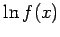
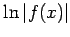

Integrale elementarer Funktionen
- 1. Grundintegrale:
- Die Grundintegrale können unmittelbar aus den Ableitungen bekannter elementarer Funktionen gewonnen werden, da das unbestimmte Integrieren einer Funktion f(x) das Aufsuchen einer Stammfunktion F(x) bedeutet.
Die in der Tabelle Grundintegrale zusammengestellten Integrale ergeben sich aus der Umkehrung der wichtigsten Differentiationsformeln der Tabelle Ableitungen elementarer Funktionen. Die Integrationskonstante C ist weggelassen worden.
- 2. Allgemeiner Fall:
- Bei der Lösung von Integralen wird versucht, ein gegebenes Integral durch algebraische und trigonometrische Umformungen bzw. durch Anwendung von Integrationsregeln auf die Grundintegrale zurückzuführen. Die im Abschnitt Integrationsregeln angegebenen Integrationsmethoden ermöglichen die Integration von Funktionen, die eine elementare Stammfunktion besitzen. Die Integrationsergebnisse sind in der Tabelle Unbestimmte Integrale zusammengestellt. Folgende Hinweise sind bei der Benutzung zu beachten:
-
Die Integrationskonstante wurde meist weggelassen. Ausgenommen sind einige Integrale, die in verschiedenen Formen mit verschiedenen beliebigen Konstanten darstellbar sind.
-
Tritt in der Stammfunktion ein Ausdruck auf, der  enthält, dann ist darunter stets  zu verstehen.
-
Wenn die Stammfunktion durch eine Potenzreihe dargestellt ist, kann die Funktion nicht elementar integriert werden.
Eine ausführlichere Zusammenstellung enthalten die Tabellenwerke dieser Taschenbuchserie Lit. 8.1 und 8.3.